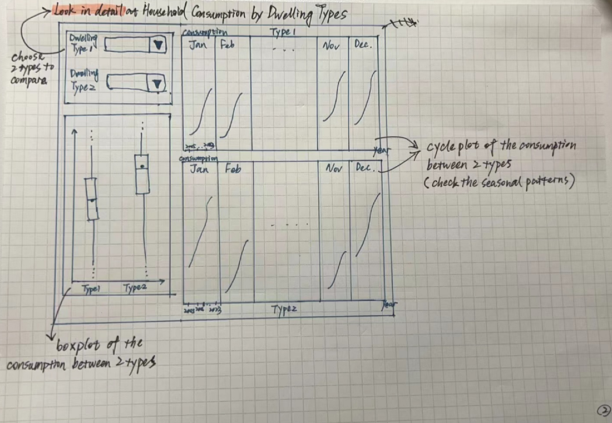

Proposal
Added in the modified date on 18 Feb 2024. No changes since 11 Feb 2024
1. Introduction
The need to review electricity consumption in Singapore remains crucial. Singapore, being a small and densely populated city-state with limited domestic energy resources, relies significantly on imported energy. The growing demand for electricity, driven by urbanization, industrialization, and technological advancements, underscores the importance of a thorough assessment of consumption patterns. In Singapore, the combustion of natural gas for electricity generation is the primary contributor to greenhouse gas emissions. Consequently, achieving net zero emissions by 2050 1 necessitates a substantial reduction in electricity consumption across all sectors. The household sector, accounting for 15% of total electricity consumption, is an important segment to target for impactful change.
To address this, the Energy Market Authority (EMA) and other relevant agencies in Singapore regularly conduct reviews to analyze current consumption trends, identify potential challenges, and formulate effective energy policies. By understanding and optimizing electricity consumption, Singapore can enhance energy efficiency, reduce environmental impact, and ensure a sustainable and resilient energy future. However, there is a need to understand further on the companies, sectors and areas in Singapore contributing to the high electricity consumption. EcoWatt is here to share on the interesting insights and proposed policies to further cut down on electricity consumption, to empower a greener Singapore.
2. Project Objectives
The primary objectives of this project are as follows:
a) Conduct a comprehensive analysis of electricity consumption across various regions in Singapore and formulate policies aimed at reducing consumption, with a specific focus on the area exhibiting the highest electricity usage.
b) Identify companies contributing the most significant share percentage to overall electricity consumption and propose policies to mitigate and reduce their consumption.
c) Identify key sectors responsible for the highest electricity consumption and develop targeted strategies to address and optimize energy usage within these sectors.
d) Investigate household types associated with both the highest and lowest electricity consumption, and devise tax incentives or rebates to encourage reduced consumption, fostering a more sustainable approach to energy usage.
[Planning area reflects a blend of cultural and infrastructural influences, illustrating how neighbours may influence each other’s electricity consumption, and how the age or design of buildings in an area might impact electricity consumption, specifically household electricity consumption]
[Dwelling type offers insights into demographic and socio-economic factors, shedding light on how household size and economic status influence electricity consumption. For instance, larger households may consume more electricity, and private or landed properties may exhibit different usage patterns]
Characteristics at the individual building level such as age and height are correlated to the monthly electricity consumption of public housing blocks2.
Can look to strengthen and promote green building certifications and standards to ensure new buildings are designed with energy efficiency in mind. This may apply to upcoming BTO projects at Tengah, Kallang, Queenstown, Sin Ming etc. This can also include incentives for existing buildings to undergo renovations that improve their energy performance.
e) Implement a robust forecasting system to predict electricity tariffs, enabling effective planning and resource allocation based on anticipated future energy costs.
f) Consequently shed light on future trends, offer insights into optimising electricity usage across all sectors, and contribute to the pursuit of a low-carbon and sustainable future.
3. Our Solution
Using various R packages, the team will extract, analyse, and visualize electricity consumption data and build an interactive R Shiny application with visual analytics techniques to enable laymen to understand the electricity consumption at one glance. From policymakers’ perspective, they are able to make more informed decision to implement electricity tariff or rebate and be in line with the Singapore Green Plan 2023.
Users will be able to:
a) Perform unbiased comparisons electricity consumptions between sectors, companies and different regions, and household type in Singapore.
b) Gain better understanding of how they can easily predict electricity tariffs
4. The Data
The following datasets will be sourced from Energy Market Authority.
The team will need to need population data across all regions, all grids in singapore and their coverages.
The current dataset will be as followed (from the tidy dataset downloaded):
Energy Flows for Electricity Generators
Annual Fuel Mix for Electricity Generation by Energy Products
Electricity Generation Capacity by Technology Type
Electricity Generation Capacity by Generator
Market Share of Electricity Generation
Market Share of Electricity Retail Based On Electricity Sales
Electricity Consumption by Sub-Sector (Total)
Number of Electricity Accounts by Sub-Sector (Total)
Total Household Electricity Consumption by Dwelling Type
Average Monthly Household Electricity Consumption by Planning Area & Dwelling Type
Electricity and Gas Tariffs
Monthly Electricity Tariffs (Low Tension Tariffs)
Annual Electricity Tariffs by Components (Low Tension Tariffs)
Number of Licensed Electrical, Gas Service and Cable Detection Workers
5. Methodology and Analytical Approach
a. Exploratory Data Analysis (EDA) via Data Visualisation
Energy supply and electricity transformation by type of energy
Electricity consumption trend across the years (increase/decrease) – might want to look at pre-covid vs post-covid as an interesting insight because there’s a rise of WFH arrangements
Electricity consumption trend across the different sectors in Singapore
Electricity consumption trend in different dwelling types in Singapore
b. Geospatial Analysis via Data Visualisation
- Electricity consumption in terms of population density in different planning areas in Singapore
c. Predictive model via Data Visualisation
- Time series forecasting: try to figure out whether there is a seasonal trend, whether there are peak and low periods of electricity consumption within a year, whether there is a characteristics among areas or dwelling type, compare and evaluate the performances of models
6. Data Visualisation Methods
In our application, the following data visualisation methods would be adopted:
a) Bar charts: for displaying energy supply and electricity transformation across different energy types to discover the major sources of electricity and their performance on transformation.
b) Dot plot (or four-quadrant): for showing consumption volume and number of accounts across different sectors, which gives a quick visual impression of the distribution of electricity consumption.
c) Boxplot: for exploring the statistics of household consumption between different dwelling types
d) Cycle plot: for exploring seasonal patterns of electricity consumption
e) Heat maps: for visualizing electricity consumption patterns across different months of the year, which can help in identifying the peak and low consumption periods.
f) Interactive thematic map: for illustrating electricity consumption and population density across the geographic regions
g) Time series visualization: visualize the temporal patterns and auto-regressive of household electricity consumption, show the performances of different forecasting models
Storyboard:
① Overview of yearly energy supply -> electricity transformation -> electricity demand
Choose the year
Show key total amount of energy supply, electricity transformation, electricity demand
Bar chart (left bottom): show amount of energy supply and electricity transformation by types of energy
Dot plot (right bottom): use dots to represent different sectors, put dots into the space where x axis represent numbers of accounts, y axis represent amount of consumption (can use four-quadrant instead)
② Look in detail at household consumption by dwelling types (check seasonal pattern)
Choose 2 dwelling types to compare
Boxplot (left bottom): show statistics of consumption between 2 dwelling types
Cycle plot (right side): show the monthly consumption trend between 2 dwelling types across years
Can also seperate by years before covid and after covid

③ Look in detail at household consumption by regions (check regional pattern)
Choose year, region, sub-region
Show 3 key indicators: consumption per person, grid coverage and peak month
Thematic maps (left bottom & right bottom): interactive maps showing consumption and population density of selected region
④Time series forecasting
Time series plot: choose attributes and series to view the time series plot at specific level
Models’ comparison: choose models and view the comparison results
7. R Shiny Packages
Our application makes use of the following R Shiny packages:
tidyverse - A collection of R packages designed for data science
knitr - An engine for dynamic report generation with R, enables integration with Markdown documents
ggstatsplot - An extension of ggplot2 package for creating graphics with details from statistical tests included in the plots
ggdist - To provide primitives for visualizing distributions using ‘ggplot2’ that are particularly tuned for visualizing uncertainty in either a frequentist or Bayesian mode
plotly – To build interactive graph
sf - To work with spatial data, specifically for representing and manipulating spatial vector data.
tmap - To be used for thematic mapping, which involves visualizing spatial data by linking statistical data to spatial features
8. Project Management
For the upcoming project, we will be embracing the agile project management approach as opposed to the conventional waterfall methodology. This decision is particularly vital given the project’s constrained timeline. Utilizing storyboarding through sketches and implementing rapid prototyping following the agile methodology will facilitate swift adaptations to changes through an interactive and iterative feedback loop within the team. The identified risks for this project include the learning curve associated with R Shiny and effective time management for team members balancing additional commitments from work and school. Implementing diligent project management measures and tracking mechanisms will be instrumental in mitigating these identified risks.
An overview of our project timeline is as shown below:
9. References
Neo, H. Y. R., Wong, N. H., Ignatius, M., Yuan, C., Xu, Y., & Cao, K. (2023). Spatial analysis of public residential housing’s electricity consumption in relation to urban landscape and building characteristics: A case study in Singapore. Energy & Environment, 34(2), 233–254. https://doi.org/10.1177/0958305X211056031
National Climate Change Secretariat. (2022, October 25). Singapore commits to achieve net zero emissions by 2050 and to a revised 2030 nationally determined contribution; Public Sector and Jurong Lake District to lead… Singapore Commits to Achieve Net Zero Emissions by 2050 and to a Revised 2030 Nationally Determined Contribution; Public Sector and Jurong Lake District to Lead… https://www.nccs.gov.sg/media/press-releases/singapore-commits-to-achieve-net-zero/
Footnotes
National Climate Change Secretariat. (2022, October 25). Singapore commits to achieve net zero emissions by 2050 and to a revised 2030 nationally determined contribution; Public Sector and Jurong Lake District to lead... Singapore Commits to Achieve Net Zero Emissions by 2050 and to a Revised 2030 Nationally Determined Contribution; Public Sector and Jurong Lake District to Lead...https://www.nccs.gov.sg/media/press-releases/singapore-commits-to-achieve-net-zero/↩︎
Neo, H. Y. R., Wong, N. H., Ignatius, M., Yuan, C., Xu, Y., & Cao, K. (2023). Spatial analysis of public residential housing’s electricity consumption in relation to urban landscape and building characteristics: A case study in Singapore. Energy & Environment, 34(2), 233–254. https://doi.org/10.1177/0958305X211056031↩︎